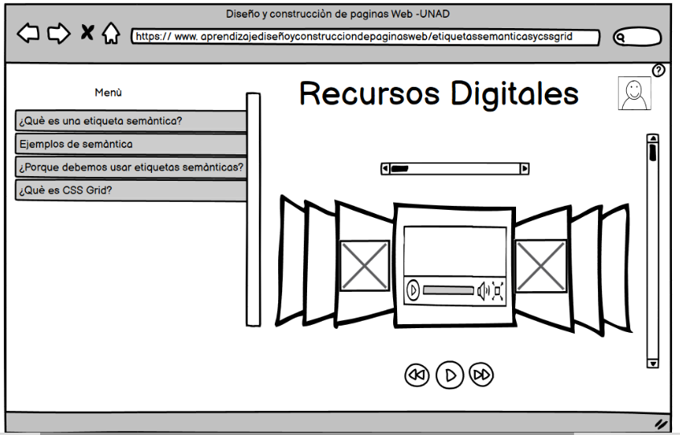

Contenido
- Qué son etiquetas semánticas?
- Etiquetas semánticas estructurales
- Por qué debemos utilizar las etiquetas semánticas y cómo nos ayudan
- ¿Qué es CSS Grid?
- Ventajas de CSS Grid

Bibliografía
Etiquetas semánticas del HTML5. (2012, 4 junio). Desarrollo Web. https://desarrolloweb.com/articulos/etiquetas-semanticas-html5.htmlGrid CSS: Introducción - CSS en español. (s. f.). Lenguaje CSS. https://lenguajecss.com/css/maquetacion-y-colocacion/grid-css/
CSS Grid Layout - CSS | MDN. (2022b, noviembre 7). https://developer.mozilla.org/es/docs/Web/CSS/CSS_Grid_Layout